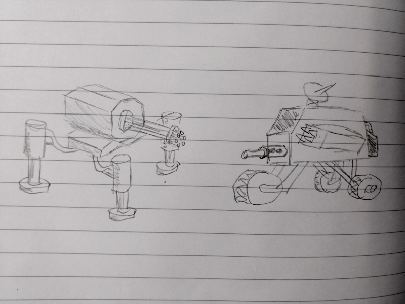
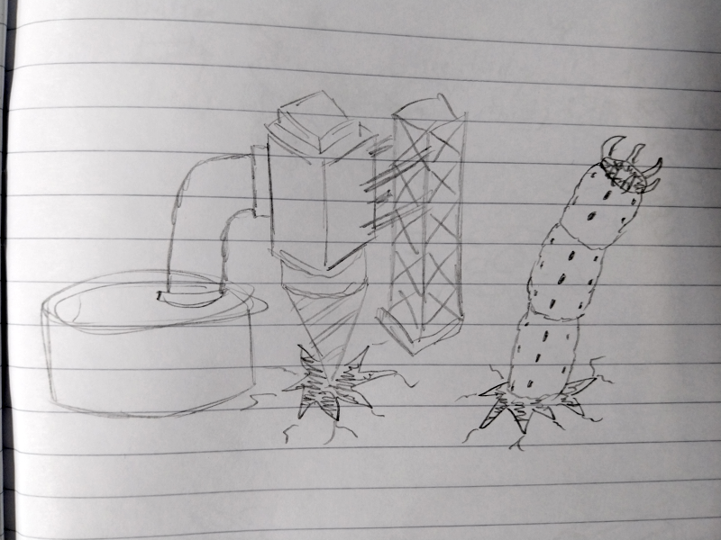

Bopcat's Blop
Creatively bankrupt hack
So we got all these weapons with increasingly powerful stats and all that, but what for?NTM's combat historically was more multiplayer focused, but some NPCs and bosses and whatnot have been shoehorned in to justify the use of guns.
Glpyhids
Glyphids as of now are the only answer to the question of a persistent and scaling threat. Of course due to the size of the NPCs as well as the limits in pathfinding, spawn quantity and the pollutions system, glyphids aren't that much of a threat for the most part. Rampant mode exists, but for a standard playthrough that's too much danger, with the constantly expanding hives and the bugs' ability to break blocks.Ok, so now what?
There's a couple of ideas that have been floating around for a while, and I just want to showcase some rough drafts I came up with. There's no concrete plans to add anything right now, but if something was added, it will likely come from one of these ideas.Just more bugs
Glyphids were originally intended to be accompanied by flying variants. Having more variety would make the standard glyphids less monotone, and flying enemies could pose a proper threat combined with the standard glyphids:- Simply because they can fly, pathfinding is no longer detrimental since most of their pathing would be straight towards the player
- They can avoid things that would stop glyphids, despite their climbing ability, like pits and anti-spider walls
- Flying enemies would likely have to rely mostly on ranged attacks, which eliminates the need for the otherwise boring, annoying and laggy ranged glyphids
- However, ranged mobs are absolutely fucking annoying in earlygame, so they would either spawn with higher pollution levels or based on global world timer
Robots, but from outer space (very original)
Another different idea completely separate from glyphids: Robots. How original.Robots could either spawn naturally (although based on the player's progression or the global world time) or from "assemblers" (read: hives, once again unfathomably original) which are created by special meteors, although with restrictions (again player progress and a minimum distance to their spawn point). Robots have the advantage of having more firepower due to being intrinsically high-tech things, with stuff like guns and rocket launchers and whatnot. A novel idea, but likely one that only makes sense in mid to late game.  Left: Non-descript walker with minigun
Right: Whatever the fuck this is
A machine on wheels would be visually interesting and have more unique movement, but the physics and pathfinding required means that it's unlikely they will be added. Still, it's a neat idea.
More recycled content
Years and years ago I wrote a generic system for burrowing entities as well as segmented mobs, which were combined into Balls-o-Tron and reused in the now scrapped Siege Tunnelers. Because we're completely out of feasible ideas, why not have a worm that spawns naturally?  Behold, this thing. Worms have the intrinsic advantage that they don't have to care about pathfinding or obstacles or anything, they can just noclip wherever they please, which means it's actually more important to kill them than to just erect walls to prevent their basic terrible AI from proceeding. Worms could be worked into progression via several means, my favorite is by having a new resource (not saying what it is) which has to be extracted from the Earth's core via drill. Doing so will yield the aforementioned lava which has to be refined, as well as awaken unseen horrors from the depths, spawning worms in regular intervals which have to be dealt with.This blog was just an excuse to not do any work, see yall in like 5 weeks after neglecting this page some more. And yes, I drew all these in the order they appear in and yes, I know the drawings get progressively worse.
< let me out